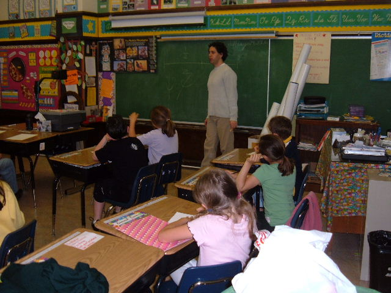

Mission

Toones Academic Music (TAM) is a 501(c)(3) non-profit organization. We offer a high-quality music-based educational
program which promotes academic excellence and the development of social skills for children between ages 5 to 10.
We believe in improving education theory and practices for children, and our research on improving the learning process
is nationally recognized by the American Educational Research Association.
Based on five years of research, we have developed an innovative curriculum to teach children music, to discover and
practice mathematics concepts, and develop social skills through music and game play. By participating in fun and
creative activities, children further develop skills in critical thinking, problem solving, and abilities to memorize and
improvise. Our research supports the findings that children enrolled in TAM showed significant improvement in the
California Standard Test (CST) Math's score.
Since the inception of TAM in 2005, we have served over 1,200 students in six elementary schools in the San Francisco
Bay Area. With budget cuts continuing to affect the level of arts education in our public schools, our goal is to take
Toones Academic Music into as many schools as possible in the United States.
HistoryToones Academic Music is an award-winning program started by educators Endre Balogh and Sue Courey. After teaching group keyboard and music classes, Balogh became interested in making his classes more fun. During the lessons, he introduced music games and singing, clapping and moving, but felt he could do even more to enhance learning. When he introduced simple counting games to the music lessons, he noticed how easily his students learned basic math concepts. This prompted him to keep exploring connections between music and math in education. Balogh and Courey met in 2005, where both taught at St. Cecilia Catholic School in San Francisco. At that time, Courey was working on her PhD dissertation. She found Balogh’s math and music learning program very intriguing, and wondered if they could quantify what the students appeared to be gaining. They decided to collaborate on a short study at the school. The results of the study were successful, and, soon after, the two began developing a curriculum-based educational program around their findings. The methodology they created, Academic Music, teaches students to connect ideas through music and grow to excel in math. Learning through play comprises an essential component of the program. Designed for children between the ages of 5 and 10, it helps them discover how the interaction of music, rhythm, keeping a beat, and working with notes can advance their math skills. Kinesthetic learning techniques can increase students’ ability to comprehend and memorize (hear, sing, write, and see). Best of all, the kids think it’s fun! |